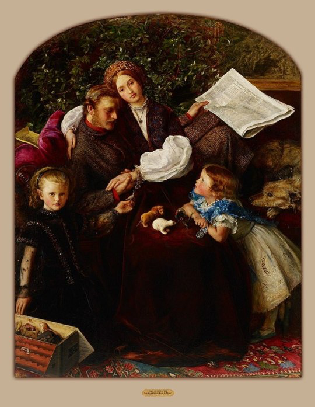
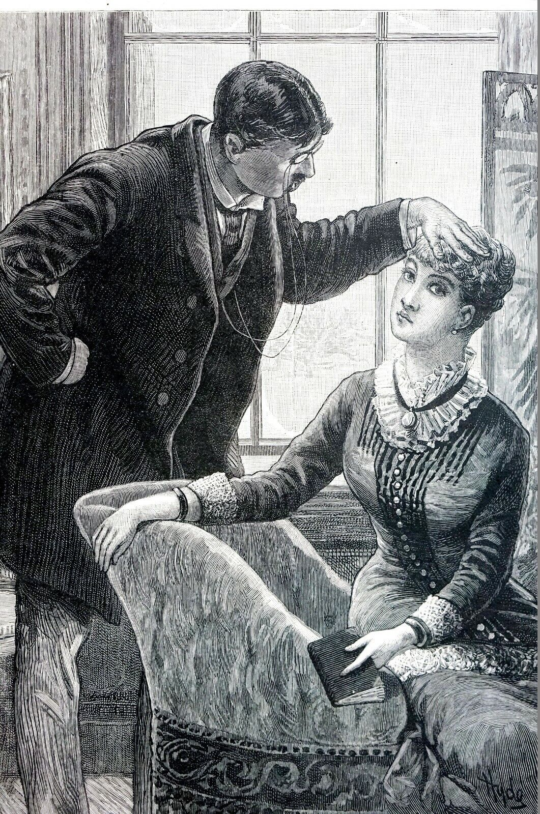

Instructor · English & Medical Humanities · Georgetown University
I study the intersection of early psychological thought, women's poetry, and British nationalism. Based at Georgetown University.
Background
I am an instructor at Georgetown University, where I teach both English and Medical Humanities. My research focuses on the intersection of early psychological thought, women's poetry, and conceptualizations of British nationalism.
I completed my PhD in English Language and Literature at the University of Maryland, College Park, where my dissertation "Reparative Forms: Poetry and Psychology from the Fin de Siècle to WWI" won the Alice L. Geyer Dissertation Prize.
I founded and also coordinate NAVSA's Race and Transimperialism Reading Group, a monthly community of scholars working at the intersection of race, empire, and Victorian studies.
Education & Affiliations
Scholarly Interests

Victorian Poetry
Women's Poetry & Psychological Thought
Exploring how late-Victorian and Edwardian women poets engaged with emerging psychological theories, shaping new forms for representing interior life and the structures of consciousness.
Nationalism, Empire & Race
Poetry, British National Identity, and Transimperialism
Examining how poetic form and genre were deployed to construct, contest, and unsettle ideas of British nationalism by Poetesses like Elizabeth Barrett Browning, E. Pauline Johnson (Tekahionwake), and Sarojini Naidu.

Medical Humanities
Medicalization of the Mind
Tracing how literary and cultural texts shaped and were shaped by the transformation of psychology from a vaguely scientific subset of philosophy into an institutionalized discipline.
Selected Works
"Psychology"
"Australia to Paraguay: Race, Nation, and Poetry at the Fin de Siècle"
"Creating Canada: Emily Pauline Johnson and the Dramatic Monologue"
"[Y]ou do not need me there': Augusta Webster's Generic Revisions to Liberal Reform"
"Indigenous Standpoint Theory and Tekahionwake"
In the Classroom
👋 Hi students. Welcome. I, too, have googled my professors.